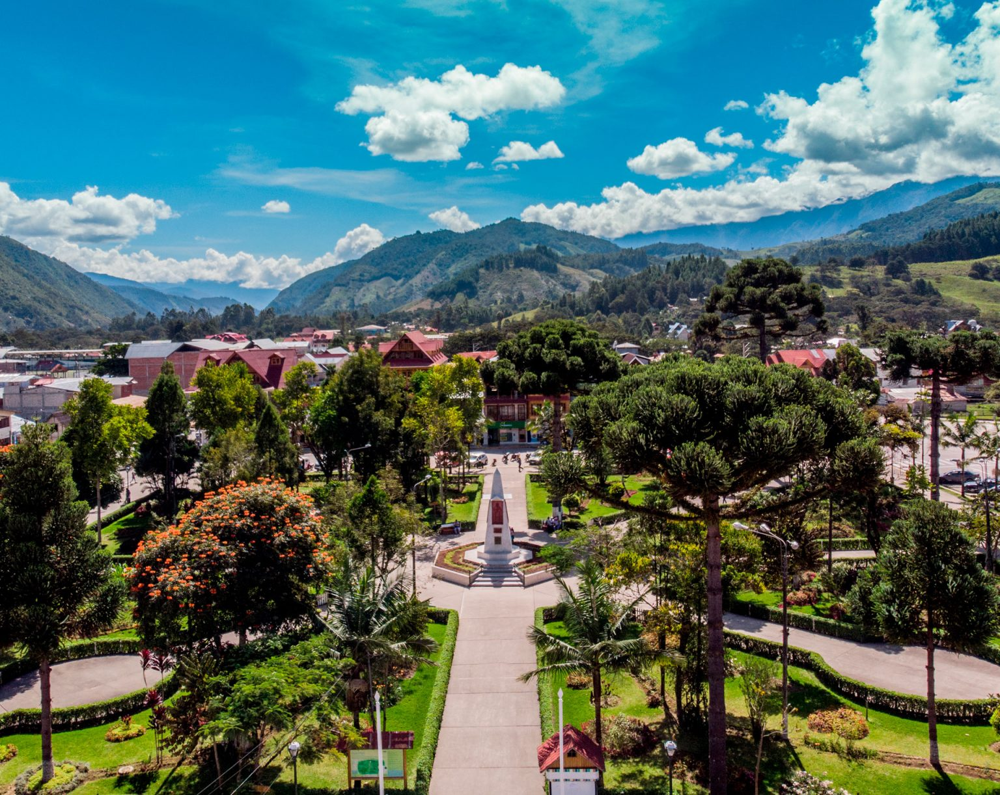
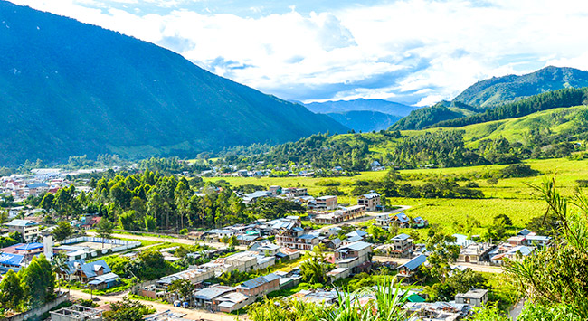
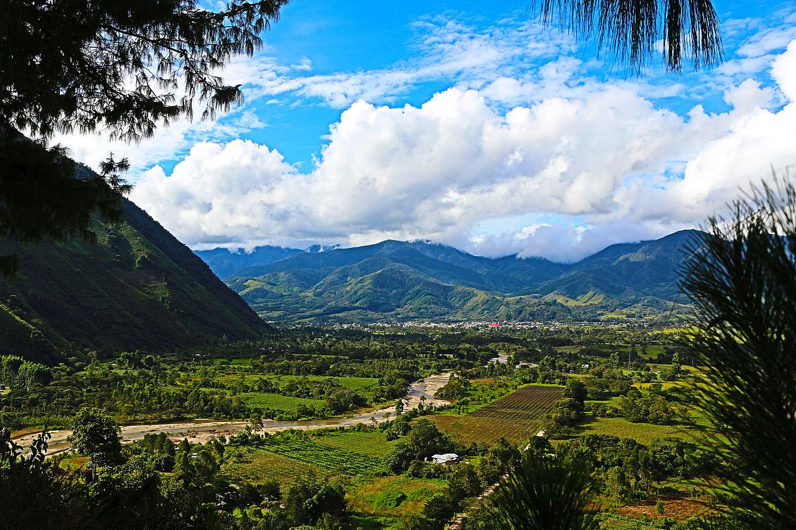

🚗 Ideal para:
- Amantes de la naturaleza y aire puro
- Viajeros que disfrutan la cultura austro-alemana
- Familias que buscan tranquilidad y aventura
🛣️ Ruta recomendada:
Lima – Pativilca – Tarma – Oxapampa
- Tip: Detenerse en Tarma para aclimatarse.
- Revisar frenos en bajadas prolongadas.

✨ Actividades destacadas:
- Tour a la Reserva de Biósfera Oxapampa-Asháninka-Yánesha
- Visita a la Catarata El Tigre
- Recorrido por fábricas de queso y cerveza artesanal
🧭 Recomendaciones:
- Llevar repelente y protector solar
- Ropa ligera por el día y abrigo por la noche
- Respetar la cultura local y sus costumbres
📸 Galería de Oxapampa


